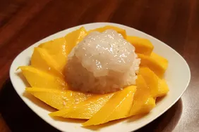

Home
Thai Sweet Sticky Rice with Mango

Description
The classic Thai dessert known as khao niaow ma muang (mango sticky rice) is heavenly and scrumptious. Famously served as street food in Thailand and at Thai restaurants throughout the world, the taste of this tropical rice pudding is irresistible—and it's easy to make at home.
Ingredients
- 2 cups water
- 1 ½ cups uncooked short-grain white rice
- 1 ½ cups coconut milk, divided
- 1 cup white sugar
- 3/4 teaspoon salt, divided
- 1 tablespoon white sugar
- 1 tablespoon tapioca starch
- 3 mangoes, peeled and sliced
- 1 tablespoon toasted sesame seeds
Steps
- Combine water and rice in a saucepan. Bring to a boil, cover, and reduce heat to low. Simmer until water is absorbed, 15 to 20 minutes.
- While the rice cooks, combine 1 1/2 cups coconut milk, 1 cup sugar, and 1/2 teaspoon salt in another saucepan. Bring to a boil over medium heat; remove from the heat and set aside.
- Stir cooked rice into coconut milk mixture. Cover and allow to cool for 1 hour.
- Make a sauce by combining 1/2 cup coconut milk, 1 tablespoon sugar, 1/4 teaspoon salt, and tapioca starch in another saucepan; bring to a boil.
- Place coconut rice on a serving dish and arrange mangos on top. Pour sauce over mangos and rice. Sprinkle with sesame seeds.
Recipe Source